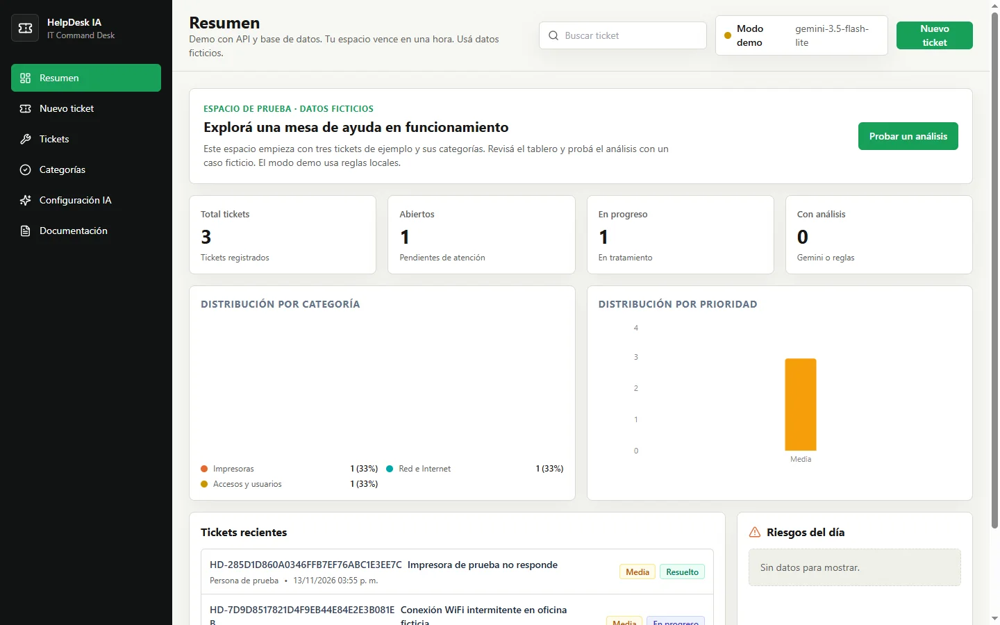
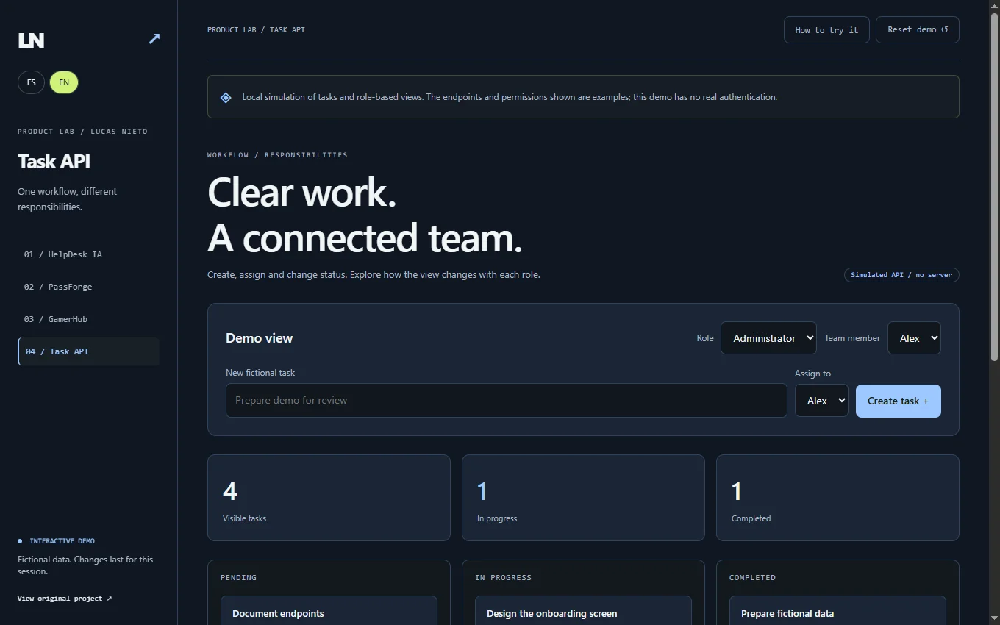

01 / SUPPORT / APPLIED AIHelpDesk IA
↗Tickets, notes and status changes in a private visitor workspace.
React · Cloudflare Workers · D1
FULL STACK DEVELOPER
I build interfaces, APIs and automation. IT Lead at Talking since 2020.
SELECTED WORK
What each project solves.
The decisions behind its implementation.

01 / SUPPORT / APPLIED AITickets, notes and status changes in a private visitor workspace.
React · Cloudflare Workers · D1
 03 / CATALOG / COMMUNITY
03 / CATALOG / COMMUNITYFreeToGame discovery with separate favorites for each profile.
React · Cloudflare Workers · D1
 02 / GENERATION / ORGANIZATION
02 / GENERATION / ORGANIZATIONWeb Crypto password generation and session-scoped records.
Next.js · TypeScript · Prisma · Better Auth

04 / TASK APIHelpDesk IA, PassForge and GamerHub use live backends. Task API is an interactive preview.
All repositories ↗EXPERIENCE
IT Lead Talking · 2020 — present
I develop internal tools, integrate APIs and automate operational workflows. I also deploy and maintain services with Linux, Docker and Nginx.
THE NEXT CONVERSATION
Looking for a developer for your team?
Tell me about the role and what you need to build.